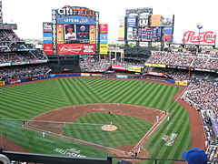

I visited my first major league ball park in August 1984 when the New York Mets defeated the Pittsburgh Pirates at Shea Stadium in Flushing, New York. While She stadium was my first stadium, it is not at the top of the list. Citifield opened in 2009 right next to where Shea stadium stood and is the current home of the Mets. With everything from Luxury Clubs to an amazing lineup of food and restaurants, Citifield easily tops the list.
 NY Mets